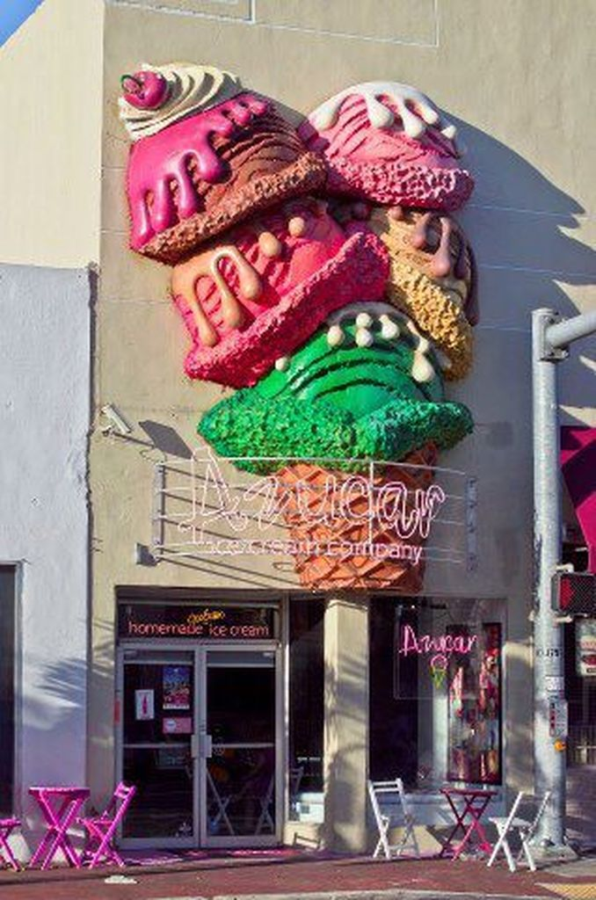
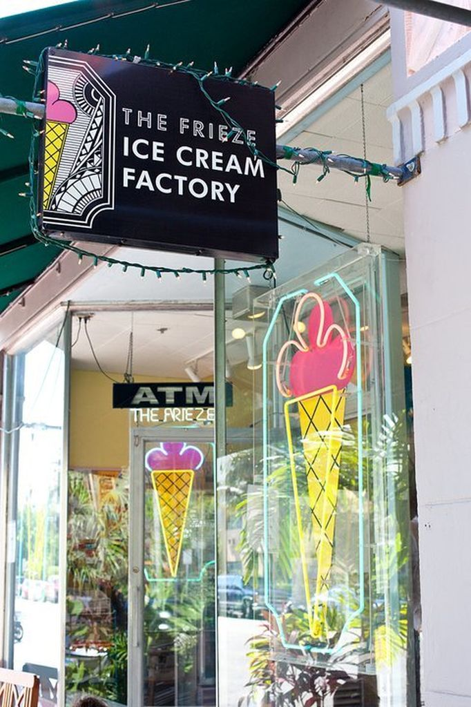
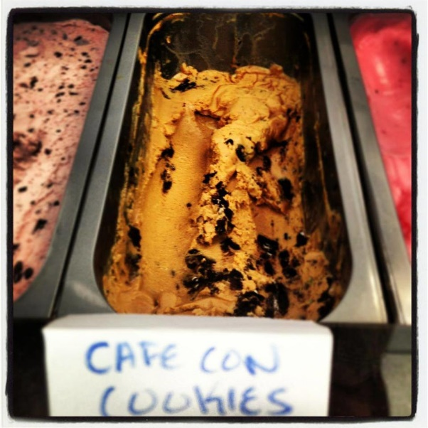
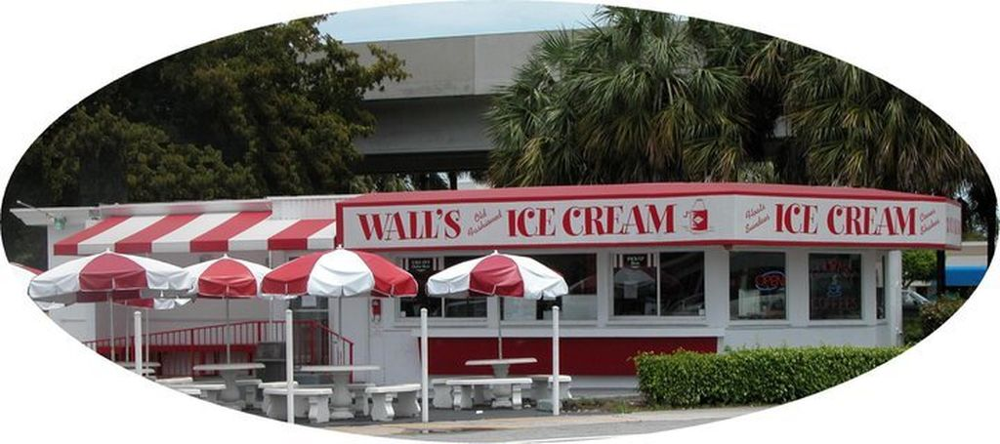
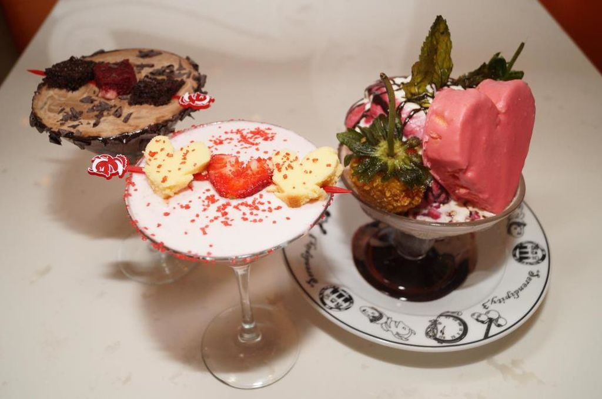

1.- Azúcar Ice Cream Company

Considera la heladería que este mes aparece en Elle Francia con su delicioso helado de Café con Leche.
Esta deliciosa heladería se encuentra en el corazón de la Pequeña Habana y ofrece helados con sabor casero y de origen cubano.
2.- Frieze Icecream Shop

En Miami Beach desde el 1987, Frieze Icecream shop ha ofrecido helados cremosos y 100% naturales con buttercream de alta calidad a los más famosos incluyendo los jugadores del Miami Heat los cuales la frecuentan.
3.- Whip N Dip Ice Cream Shoppe

Desde 1986, esta heladería en Coral Gables deleita a Miami con sus helados cremosos caseros. Con mucho cariño, sus dueños originales George y Nancy Giampetro y sus hijos aún manejan la heladería que es una extensión del vecindario.
4.- Wall's Old Fashioned Ice Cream

La heladería, cerca de la Universidad de Miami, siempre se encuentra llena de estudiantes y de sabores interesantes como el "Super Hero" y es conocido por sus "Sundaes". Es una heladería tradicional con un sabor nostálgico de la década de los 50s. Tienen más de 28 sabores que se sirven diariamente en conjunto con una decena de chocolates hechos en casa- Tom's Fudge.
5.- Serendipity3

Serendipity con sus helados y su chocolate caliente frizado llegó de Nueva York a Miami Beach y se encuentra en la divertida via de Lincoln Road justo al lado del cine Regal Movie Theatre. Esta heladería de alta fama se ha adaptado a su nueva dirección Miamense ofreciendo para su audiencia adulta hasta cocteles Cake-Tinis. Tiene un menú amplio y ofrecen almuerzo y cena.